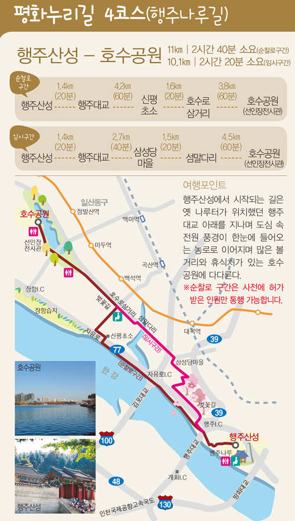
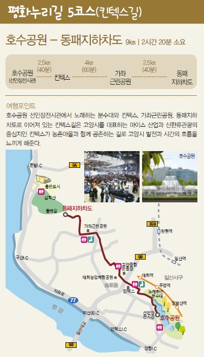
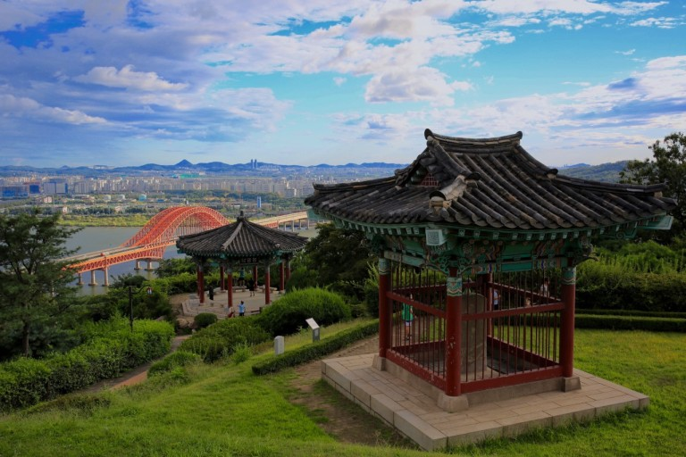
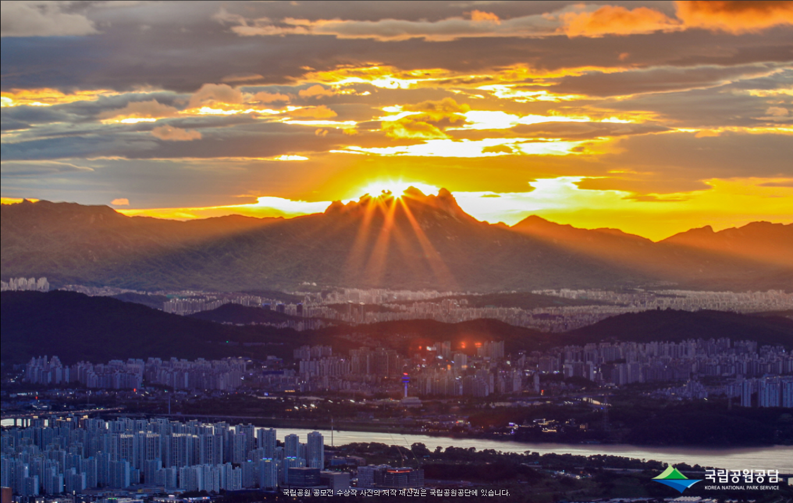

남북을 가로막은 분단의 장벽을 따라 가는 평화누리길
평화누리길은 비무장지대의 자연생태계와 삼국시대의 성인 당포서으 고려시대의 왕과 공신을 모신 숭의전 등 문화 유산을 골고루 관찰가능하게 기획하였다.
 
행주산성
선조의 지혜가 깃든 아름다운 문화 유산

행주산성은 경기도 고양시 덕양구 행주내동 덕양산의 7, 8부 능선에 쌀은 태뫼식 성으로 흙을 이용한 토축산성입니다. 사적 제 56호로 지정되었습니다.
성안에는 삼국시대의 적살색 연질토기와 회청색 경질토기 등의 조각을 비롯하여 어골문, 수지문이 새겨진 기와조각도 발견되고 있어 고려시대까지도 사용된 것으로 보입니다.
특히, 행주산성은 1593년 권율장군이 대승을 이룬 전적지로 임진왜란 3대첩의 하나인 행주대첩을 이룬 곳입니다. 현재 성안에는 복원된 415m의 토성의 성곽과 1603년에 세운 행주대첩비가 있으며
,1970년에 대대적인 정화작업으로 권율장군의 사당인 충장사 등을 건립하여 현재의 모습을 이루고 있습니다.
북한산국립공원

북한산국립공원은 도심 속의 자연공원으로 화강암 지반이 침식되고 오랜 세월 풍화하면서 곳곳에 깎아지는 바위봉우리와 그 사이로 흘러내리는
아름다운 계곡들을 이루고 있다. 또한 2000년의 역사가 담긴 북한산성을 비롯한 수많은 역사, 문화유적과 100여개의 사찰, 암자가 위치하여 많은 볼거리를 제공하고 역사문화 학습의 장이 되고 있다.